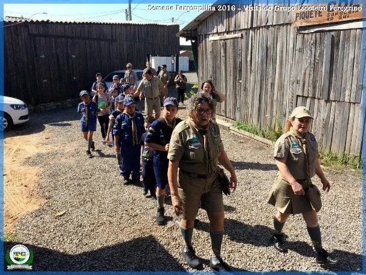
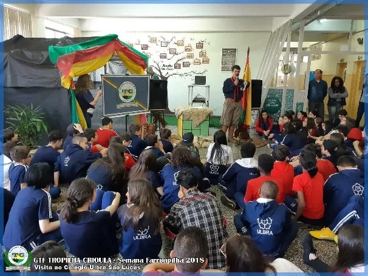
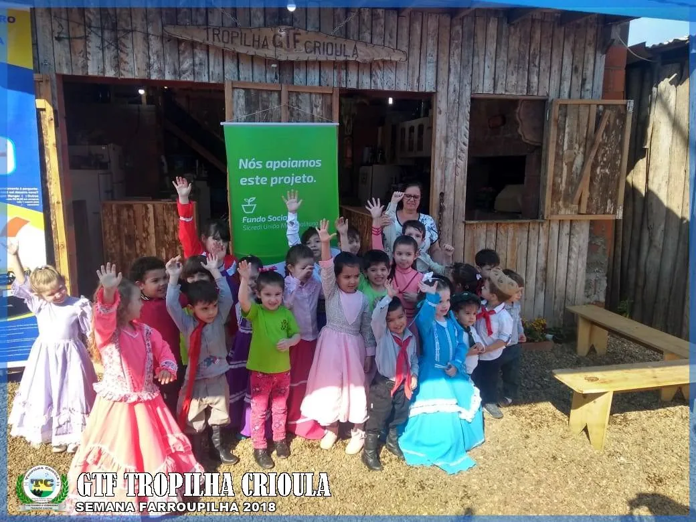

Programas
O que fazemos
Cultura e ação social caminham juntas, o ano inteiro.
Eixo 1
Cultura e formação artística
Curso de Fandango
Gratuito, desde 2015: 17 edições e cerca de 900 formandos.
Ver página →Invernadas Artísticas e Declamação
Danças em quatro categorias, declamação gaúcha e a oficina Tropilha em Versos.
Ver página →Musical Tropilha da Canção
Oficinas gratuitas de gaita, violão gaúcho e canto, com instrumentos que permanecem na entidade.
Departamento Cultural
Prendas e peões que lideram as ações culturais e representam o Tropilha. Oficinas de chimarrão e indumentária.
Indumentária e gastronomia
Palestra sobre a pilcha, Traje de Honra do RS (Lei nº 8.813/1989), e oficina de gastronomia gaúcha.
Esportes campeiros
Bocha, bolita, truco e jogo de 48, com canchas em construção e oficinas intergeracionais.
Quem atendemos
Públicos prioritários
- Crianças e adolescentesEscolas, ACAPASS, invernadas, fandango e música
- JovensFandango, Departamento Cultural, música e esportes
- Pessoas idosasNatal Solidário e convivência entre gerações
- Pessoas com deficiênciaParceria com a APAE: grupo “APAExonados pela Tradição”
- Vulnerabilidade socioeconômicaGaleto Solidário e atividades gratuitas
- Pessoas em situação de ruaTropilanche
- Atingidos por eventos climáticosCheias de 2024 e Campanha do Cobertor
- Comunidades periféricasEscolas públicas e bairros de Sapucaia do Sul
Nas escolas
Educação patrimonial
O Tropilha vai até a escola: oficinas de danças tradicionais, declamação, hora do conto, fantoches, brincadeiras e Vaca Parada, adaptadas a cada faixa etária. A ação é apoiada pelo projeto Sementes da Tradição (CTG na Escola), que deu ao Tropilha o 1º lugar entre as entidades da 12ª Região Tradicionalista.



Participe
Fale com a gente
Informações, inscrições e voluntariado pelo WhatsApp (51) 98088-1334 ou pelo e-mail gtftropilhacrioula@gmail.com.
Eixo 2 · Departamento Social
Ação social e defesa de direitos
Tropilanche
Lanches e marmitas para pessoas em situação de rua, todo mês.
Ver página →Natal Solidário
Visitas com música, dança e presentes a idosos em acolhimento.
Ver página →Galeto Solidário
Almoço comunitário cuja renda apoia entidades e a obra da sede.
Ver página →Campanha do Cobertor
Cada R$ 25 doados viram um cobertor popular para quem enfrenta o frio.
Oficina de brinquedos na ACAPASS
Tarde de brincadeiras gaúchas com crianças e adolescentes acolhidos na Casa de Passagem.
Tropilha nas Escolas
Vivências de danças, declamação e brincadeiras em escolas públicas e na APAE.
Cheias de 2024
Por cerca de 30 dias, arrecadação, marmitas e distribuição a famílias atingidas, em 7 municípios.